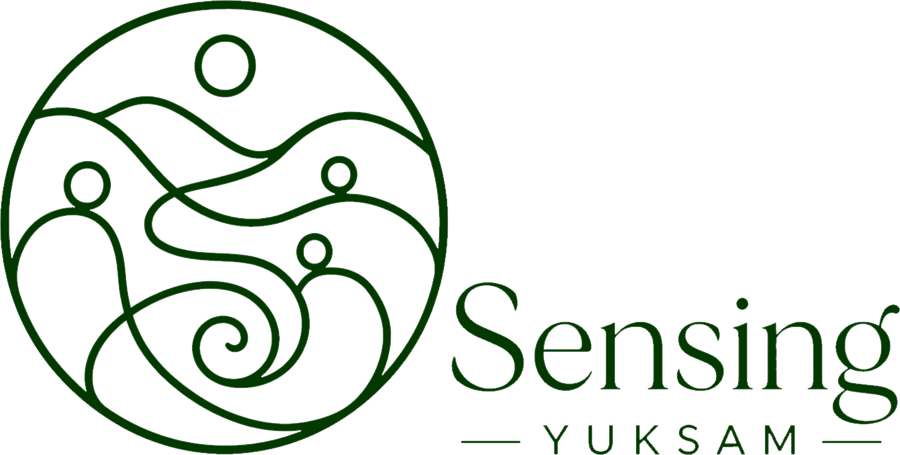
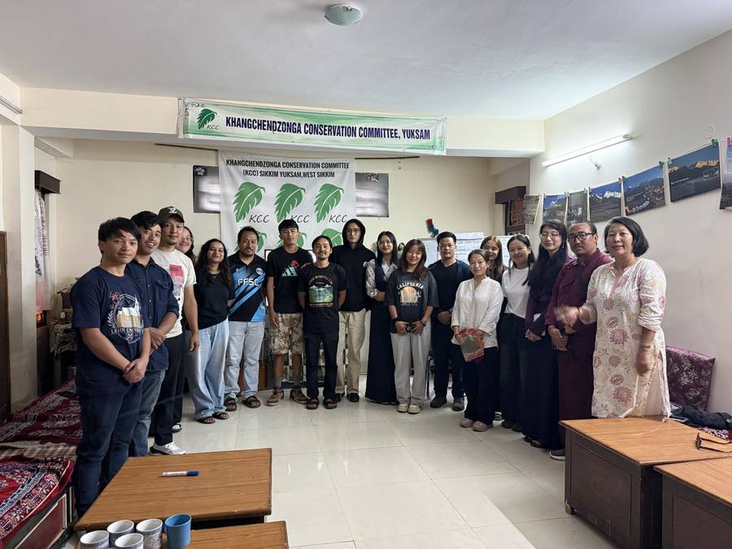
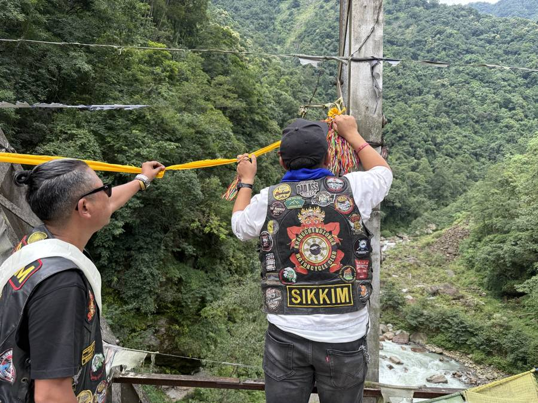
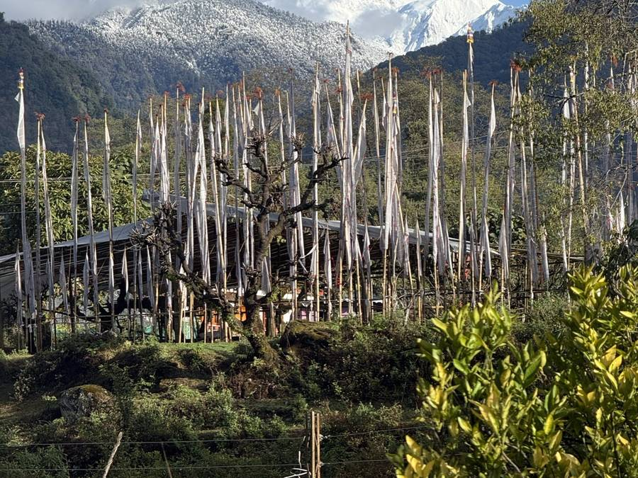
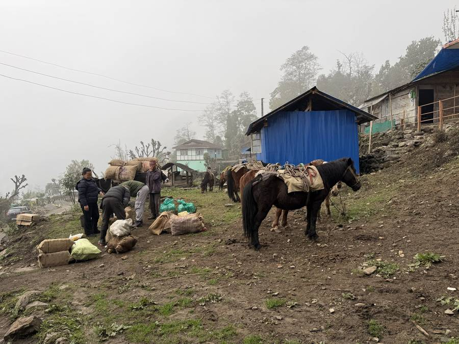
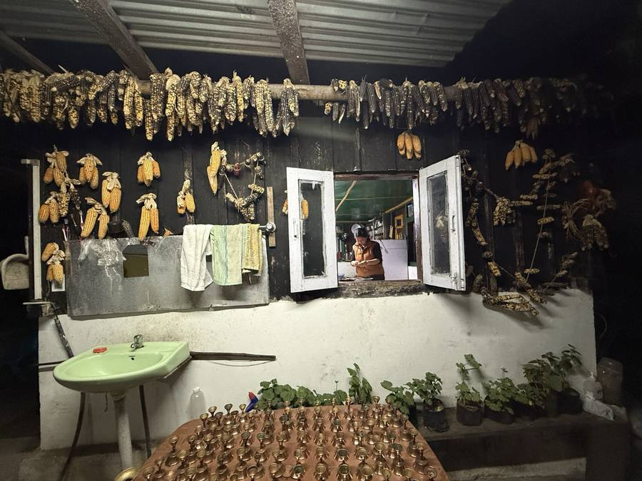
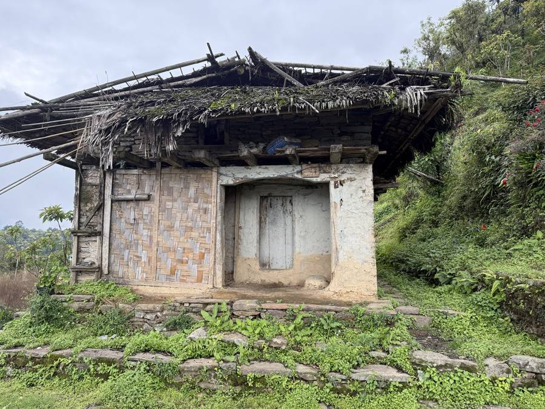

from our meetings at KCC and from around Yuksam
Sensing Yuksam is Yuksam told by the people who live here. Films, photographs, stories, sounds and memories, made by residents, about the everyday life of this place. It is not finished and never will be. This is an ongoing, lifelong documentation of Yuksam in all its colours.
The chapters
Loading the chapters…